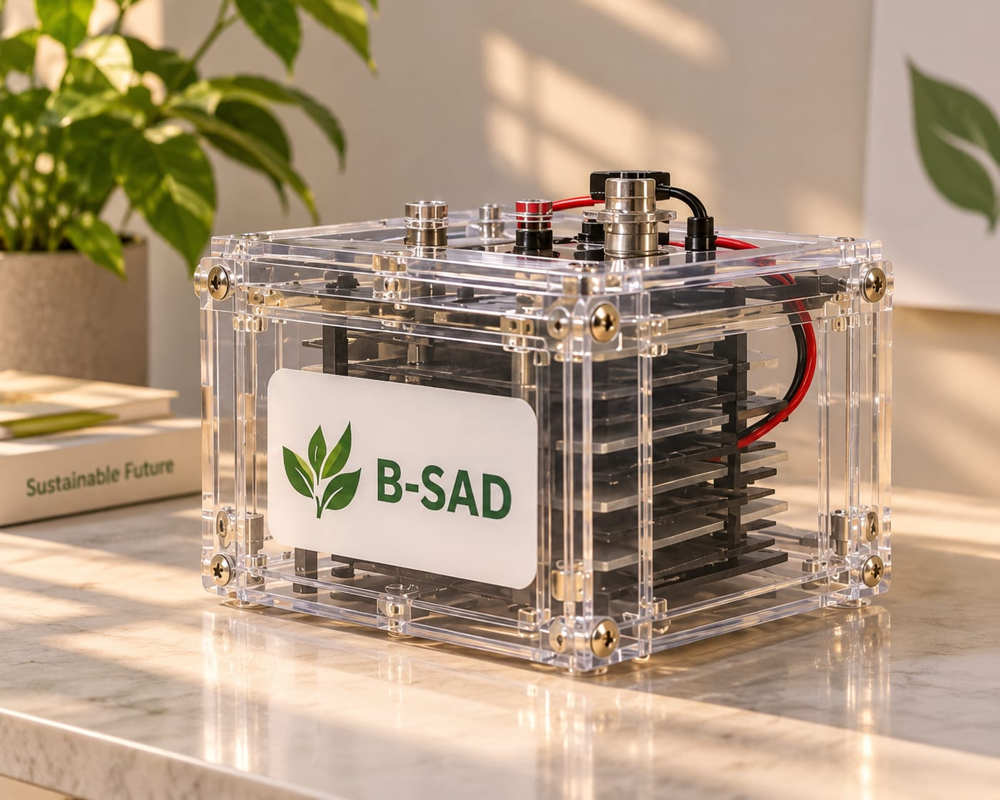
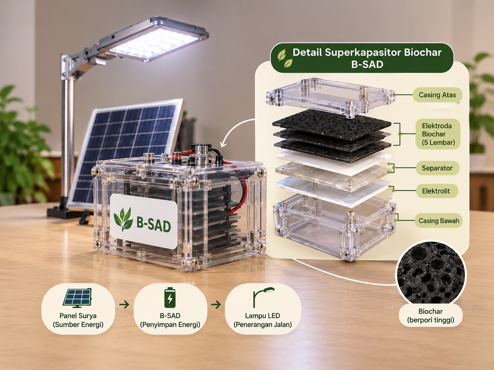
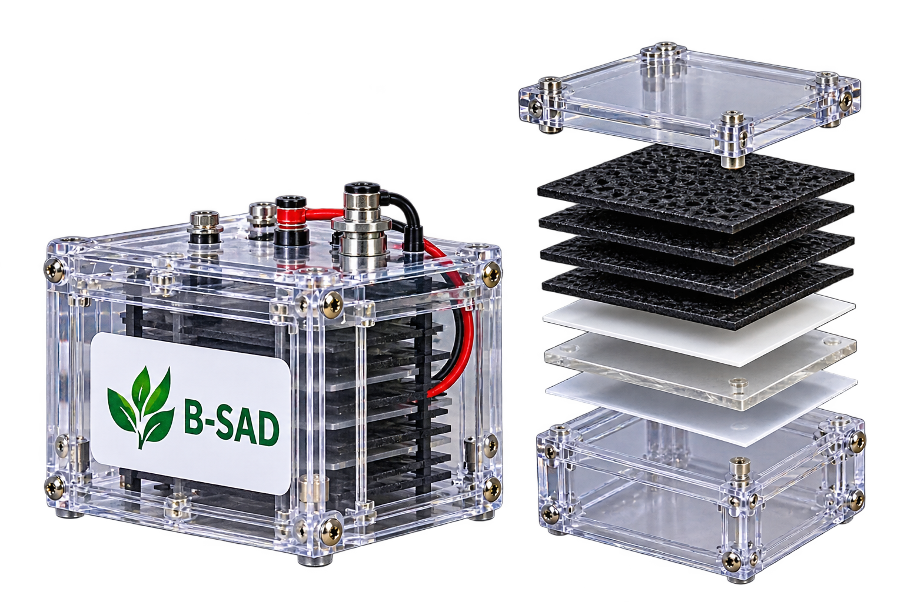

10–15 ton
sampah pasar per hari
INOVASI SISWA · KOTA JAMBI
Berangkat dari permasalahan limbah sayuran di Pasar Angso Duo, Tim BISA menghadirkan B-SAD sebagai inovasi pengolahan sampah organik menjadi biochar sebagai material alternatif teknologi penyimpanan energi berkelanjutan.
Eksplor Produk B-SADTim BISA · SMA Negeri 3 Kota Jambi
B-SAD (Biochar Supercapacitor Angso Duo) merupakan inovasi perangkat penyimpanan energi berbasis superkapasitor yang menggunakan biochar dari limbah sayuran sebagai material elektroda. Perangkat ini dirancang untuk menyimpan dan melepaskan energi listrik guna mendukung pemanfaatan energi bersih skala kecil.


01 / kenapa harus b-sad
Proposal mencatat Pasar Angso Duo menghasilkan sekitar 10–15 ton sampah setiap hari. Limbah sayuran basah yang tidak segera ditangani berpotensi membusuk, menghasilkan metana dan air lindi. Tim BISA mengusulkan pengambilan bahan langsung dari sumbernya sebelum membusuk. 🍃 100% Bebas limbah B3 & Ramah lingkungan ♻️Ekonomi sirkular dari sumber lokal 💡Andal & Tahan Lama ✨Desain Modular & Siap pakai
Angka berikut adalah data latar belakang yang dikutip dalam proposal, bukan hasil pengukuran situs ini.
10–15 ton
sampah pasar per hari
>70%
diperkirakan berupa limbah sayuran
81–90%
kadar air sayuran hijau yang dikutip
02 / KENALI & SIMULASIKAN B-SAD
Kerjakan tantangan di setiap tahap. Bahan akan berubah hanya setelah kamu memilih langkah yang tepat dan menjalankan prosesnya. Ini simulasi alur proposal, bukan hasil eksperimen nyata.
TAHAP 01 · PILAH BAHAN
Dalam rancangan, sawi, kubis, kangkung, dan bayam dipisahkan dari sampah lain sebelum dicuci, dicacah, dan dikeringkan. Seret ke area daur ulang; kamu juga bisa mengetuk tiap bahan.
Area daur ulang sayur
0 dari 4 bahan terkumpul
TAHAP 02 · PENGERINGAN
Sayur yang sudah dipilah dikeringkan secara terkontrol hingga kadar airnya ditargetkan di bawah 10%. Dari 50 kg bahan segar, proposal menargetkan 5–10 kg biomassa kering.
Kuis: apa tujuan utama pengeringan?
TAHAP 03 · PIROLISIS & AKTIVASI
Rancangan menggunakan pirolisis sekitar 400–500°C dalam kondisi minim oksigen, kemudian aktivasi dan pembilasan hingga netral. Target hasilnya 1–2 kg biochar dari 50 kg bahan segar awal.
Kuis mencocokkan: pilih keterangan yang tepat untuk setiap proses.
 🔥 Seret ke alat pemanas
🔥 Seret ke alat pemanas
Pirolisis
Perendaman dalam air saja
TAHAP 04 · ELEKTRODA & UJI
Biochar dicampur perekat CMC dan bahan konduktif menjadi pasta, kemudian dilapiskan pada foil. Dua elektroda dipisahkan separator dan dipadukan dengan elektrolit garam netral untuk rancangan sel superkapasitor.
Kuis: urutan mana yang menggambarkan perakitan?
Komponen bergambar — klik atau seret ke susunan elektroda.

🎉 Selamat, simulasi selesai!
Menurut target proposal, modul biochar akan diuji bersama panel surya mini untuk menyuplai lampu LED 1–3 W selama 1,5–3 jam. Angka ini masih sasaran penelitian, bukan capaian yang telah terbukti.
Simulasi ini untuk belajar alur, bukan panduan praktik mandiri. Pirolisis dan aktivasi material hanya boleh dilakukan dengan fasilitas laboratorium, penerapan K3, dan bimbingan guru.
03 / INTERACTIVE PRODUCT EXPLORER 3D
Putar exploded view dengan drag atau swipe, lalu pilih hotspot untuk memahami peran setiap lapisan superkapasitor biochar.
03 / PEMANTAUAN INTERAKTIF
Dalam model sederhana ini, semakin tinggi penggunaan B-SAD, semakin rendah perkiraan relatif limbah sayur. Ubah slider untuk melihat hubungan berlawanan.
ATUR SKENARIO
60 dari 100
Geser atau gunakan tombol panah pada keyboard. Bar akan berubah bersamaan.
Konversi bahan biochar
Dari 100 kg limbah sayur → sekitar 2–4 kg biochar
Estimasi simulasi mengikuti rasio target proposal, bukan hasil pengukuran nyata.
Simulasi pemantauan ini menunjukkan hubungan berlawanan secara ilustratif, bukan data pengukuran nyata.
04 / KOLABORASI
Punya pertanyaan tentang proposal, peluang penelitian, atau kolaborasi? Kirim pesan untuk Tim BISA. Proyek masih berupa rancangan purwarupa.
Pesan Anda akan disimpan untuk ditinjau tim.